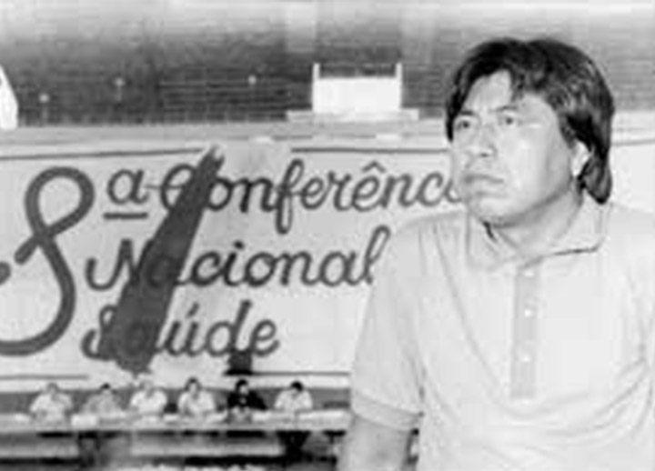

Módulo 2 | Aula 1
A construção do Sasi SUS: a luta pela saúde diferenciada
Tópico 2
Políticas Públicas em Saúde para os Povos Indígenas no Brasil
A política de saúde indígena é resultado de muita articulação e luta. Isso se deve, historicamente, à omissão e negligência do Estado brasileiro quanto à saúde dessas populações. Por isso é importante lembrar o caminho percorrido para chegarmos à conquista do Subsistema de Atenção à Saúde Indígena dentro do Sistema Único de Saúde - SUS, pois ele é um direito conquistado pelos povos indígenas.
Políticas Públicas em Saúde para os Povos Indígenas no Brasil
São poucos os relatos sobre os povos originários e seus modos de vida antes da invasão dos portugueses ao Brasil, em 1500.
Neste território, moravam milhões de pessoas, pertencentes a diversos povos que construíam seu modo de vida e suas práticas de cura. Para os europeus, os indígenas foram fundamentais nos cuidados dos doentes e na apresentação da fauna e da flora, utilizadas nos tratamentos de doenças.
Darcy Ribeiro, sociólogo, antropólogo, defensor da causa indígena, relatava em seus livros que os portugueses chegavam doentes ao Brasil, dependendo dos cuidados dos povos indígenas, passando para eles diversas doenças infecciosas, como varíola, gripe, sarampo, tuberculose, dentre outras.
Com objetivo de ocupar o território e utilizar os indígenas como mão de obra para a produção econômica, a relação que o governo colonial e o império tiveram com os povos originários foi de muita violência, expulsando-os de suas terras.
Em muitos momentos, a disseminação de doenças entre os indígenas foi intencional, para facilitar a invasão de suas terras. Doenças, que eram novas nos territórios indígenas, resultaram em muitas mortes causando o genocídio de muitos povos. Assim, historicamente, os povos indígenas tiveram que enfrentar essas novas doenças, principalmente, com suas práticas de cuidado.
Durante a Colônia e o Império, as ações da Coroa e da Igreja Católica com os padres jesuítas se resumiram na catequização e utilização de mão de obra escrava indígena. Havia também o interesse em formar alianças e parcerias com alguns grupos indígenas para defesa do território.
movie
Para assistir...
GUERRAS DO BRASIL.DOC - Ep. 1: As guerras da conquista:
O documentário “Guerras do Brasil” conta a relação do governo brasileiro com os povos indígenas.
You Tube. MPABrasil
quick_phrases
Para refletir...
Você conhece a história dos primeiros contatos com os não indígenas em seu território?
Quais impactos a história do contato com os não indígenas trouxe para o seu povo, principalmente para a saúde no seu território?
Destacamos aqui um trecho do relato da liderança Kayapó que vive no estado de Mato Grosso e quando criança vivenciou a chegada dos não indígenas em seu território:
format_quote
"Nós não tinha TB [tuberculose], nós não tinha sarampo, não tinha gripe, isso nós não tinha. Diarreia de vez em quando tinha, porque o pessoal, eles comiam comida diferente aí dava diarreia, mas ele sabia tratar. Agora, essas doenças que o homem branco levou, não tinha. Nós não tinha o que é TB, sarampo, gripe. Gripe é muito ruim pra nós indígenas, morria muitos indígenas por causa da gripe. Depois do contato, se eles pegavam gripe, morriam muitos indígenas. Ficava doente mesmo, pegava pneumonia, morria porque não tem remédio né. "
(Relato da Liderança Kayapó/MT adaptado do texto de VIEIRA, 2019, p.78)
Em 1910, o Estado brasileiro cria o Serviço de Proteção aos Índios (SPI), órgão responsável pela política indigenista, que inicia a discussão e organização de algumas ações de saúde, de forma institucional.
Crianças Parintintins ouvindo gramofone, Posto Antônio Paulo, 1926
Fonte: Memória da Administração Pública Brasileira
Na primeira metade do século XX (entre 1910 e 1950), a doença era entendida como um problema para a “integração nacional” dos indígenas, por isso, uma das missões do SPI era melhorar a saúde dessas populações. Essa atuação estava relacionada com a perspectiva de que os indígenas virassem trabalhadores nas atividades agrícolas.
É importante lembrar que, neste período, havia uma forte abordagem higienista que era usada como justificativa para proibir as práticas de cuidado dos indígenas, desde o banho diário no rio até os rituais dos especialistas tradicionais.
Como a atuação do SPI era insuficiente na garantia de ações de saúde para os povos originários, outras instituições, como as missões católicas e evangélicas, mantinham algumas enfermarias e até mesmo hospitais nas proximidades ou nos próprios postos de atendimento aos indígenas. Nestas ações de saúde, os povos indígenas eram tratados como moradores da zona rural, sem qualquer reconhecimento de suas diversidades e das práticas de cuidado tradicionais, que milenarmente já existiam em seus territórios.
Em 1946, o Dr. Herbert Serpa, médico que chefiava a seção de Estudos da FUNAI no período, elaborou um projeto específico para assistência médica e sanitária aos indígenas. O projeto propunha que se considerasse os conhecimentos indígenas, sugeria a presença de médicos em cada inspetoria regional do SPI, que supervisionasse a atuação de enfermeiros em todos os postos. Este projeto destacava a importância de conhecer a cultura e o modo de vida dos povos originários, proposta muito diferente das ações praticadas pelo governo nesta época, mas que não foi implementada.
Nutels é um personagem da saúde pública brasileira que notabilizou-se por rechaçar a naturalização do genocídio dos povos indígenas no Brasil."Fonte: História Ciência Saúde Manguinhos
No final da década de 1940, o médico Noel Nutels, que estava à frente do Serviço Nacional de Tuberculose, acompanhou a expedição Roncador-Xingu, visitando diversas aldeias onde encontrou uma situação sanitária muito grave, particularmente a da tuberculose.
A partir dessa experiência, Nutels elaborou um plano para proteção dos povos indígenas quanto às doenças infecciosas, fundando em 1956, o Serviço de Unidades Sanitárias Aéreas (SUSA). O objetivo do SUSA era vacinar, controlar a tuberculose e outras doenças transmissíveis na população indígena e comunidades rurais de difícil acesso.
A atuação dessas equipes enfrentou grandes desafios logísticos em um país tão grande, com constantes faltas de materiais e equipamentos de saúde, o que contribuiu para tornar a assistência prestada muito escassa.
Neste período, a assistência médica nos territórios indígenas se resumia a viagens eventuais das equipes contratadas; em alguns casos graves, o indígena era retirado da aldeia e levado ao hospital.
Muitas denúncias quanto às ações do SPI foram parar na imprensa. Tentando se defender, o órgão prometeu farmácias e um ambulatório em cada posto de saúde indígena, além da contratação de médicos que visitariam as comunidades pelo menos a cada 15 dias e a construção de campos de pouso para helicópteros, contudo, estas promessas não saíram do papel.
question_mark
Saiba mais...
Índios, memória de uma CPI:
O documentário Índios, memória de uma CPI mostra o inquérito realizado pela Câmara dos Deputados em 1968 que investigou a situação dos povos indígenas:
Fonte: Youtube. Povos Indígenas do Brasil
Além disso, o Relatório Figueiredo, produzido em 1967, descreve as violências praticadas contra índios brasileiros na época.
menu_book
Material complementar
Conheça o Projeto Xingu, que oferta ações de saúde aos povos indígenas desde a década de 1960
O Projeto Xingu foi criado em 1965 após o encontro de Roberto Baruzzi, médico e professor da Universidade Federal de São Paulo (antiga Escola Paulista de Medicina), com Orlando Villas Bôas, no Parque Indígena do Xingu.
Com atividades desenvolvidas nas áreas de assistência, ensino e pesquisa, o Projeto Xingu tem um papel importante no debate da política de saúde para os povos indígenas.
Logotipo da Fundação Nacional do Índio (Funai)
Fonte: Wikipedia
Em 1967, durante o período da ditadura militar (1964 a 1985), devido às denúncias, o governo extingue o SPI e cria a Fundação Nacional do Índio (FUNAI), que assume as funções da saúde e assistência nos territórios indígenas.
Ao ser criada, a FUNAI começou a organizar as Equipes Volantes de Saúde (EVS) para prestar assistência nos territórios indígenas de forma campanhista, ou seja, as equipes tinham uma área de atuação preestabelecida onde eventualmente realizavam atendimentos, prestando assistência médica, vacinando e supervisionando o trabalho do pessoal de saúde local, geralmente auxiliares ou atendentes de enfermagem. Estas equipes nunca chegaram a muitas comunidades e outra característica questionada era a ênfase na distribuição de medicamentos.
Veja o comentário de uma liderança Krenak sobre este período:
format_quote
"Porque antes, quando a saúde indígena era um assunto da FUNAI e de outras agências que cooperavam com a FUNAI, o que acontecia era que o serviço era feito de uma maneira muito precária. Basicamente as equipes de saúde deixavam nas aldeias farmácias, montavam farmácias nas aldeias. [...] A atenção básica, ela era feita quase que com uma ou duas visitas-ano numa aldeia.
E as farmácias nas aldeias eu achava que era um desastre. E muitas das demandas que vinham das aldeias, equivocadamente era para reforçar aquele sistema né. Era para ter mais farmácia. Em alguns casos até uma policlínica, um mini-hospital. Estavam confundidos sobre a necessidade que as aldeias tinham de atendimento da saúde e às vezes por desinformação eles acabavam fazendo lista de medicamento. E eventualmente demandavam equipes, pediam médico. Então, eles pediam médico e remédio."
Relato liderança Krenak/MG adaptado do texto de VIEIRA (2019, p. 81/82)
quick_phrases
Para refletir...
Você conhece a história das ações que o governo brasileiro desenvolveu em seu território pelo SPI e FUNAI? Que outras instituições ofertam ações de saúde no seu território? Como você avalia essas ações?
Durante a ditadura, as ações de saúde foram irregulares e não alcançaram todos os territórios, gerando um cenário de desassistência. Mas no final da década de 1970, as lutas pela redemocratização do país ganharam força. Nesse período, emergiu o chamado Movimento da Reforma Sanitária Brasileira, articulando a demanda pelo direito à saúde. Os povos indígenas, que há muito tempo lutavam por seus territórios, se juntaram a estes movimentos, pela democracia e por uma nova política de saúde.
A estruturação de uma política de saúde indígena no SUS
Durante a década de 1980, se ampliam os espaços de debates políticos com a realização de assembleias indígenas em várias regiões, incluindo a pauta de saúde.
Ao mesmo tempo, diversas instituições como o Conselho Indigenista Missionário (CIMI), a Comissão pela Criação do Parque Yanomami (CCPY) e universidades, realizavam ações de saúde nas comunidades indígenas formando agentes indígenas de saúde.
Entre 1984 e 1985, a FUNAI realizou três eventos para discutir as suas ações de saúde, sendo apontado diversos problemas, como a distribuição excessiva de medicamentos.
Os debates que ocorriam sobre a saúde indígena apontavam para questões que também estavam sendo discutidas nacionalmente pela reforma sanitária:
a saúde estava relacionada com um conjunto de determinantes sociais como, no caso dos povos indígenas, o acesso à terra;
as ações de saúde não deveriam somente focar nas doenças, mas atuar na prevenção e promoção, além da importância de se valorizar os conhecimentos e práticas dos territórios.
question_mark
Saiba mais...
Na década de 1970 se estruturaram no Brasil diversos movimentos e organizações pela luta de direitos.
Entre os anos de 1974 e 1984 foi registrada a realização de 56 assembleias indígenas que debatiam temas como terra, saúde, escola, autodeterminação e organização indígena, cultura, “desenvolvimento” e projetos agrícolas, relações com a FUNAI e com demais instituições governamentais, devastação dos recursos naturais, entre outros. Estas assembleias, organizadas com apoio do Conselho Indigenista Missionário, foram fundamentais para a organização de uma ação coletiva.
Em 1980, surge a União das Nações Indígenas (UNI), primeira tentativa dos indígenas de uma organização nacional.
A UNI, ancorada nos debates ocorridos nas assembleias, chega à 1ª Conferência Nacional de Proteção à Saúde do Índio com um texto em que apresenta a percepção de saúde pelos povos indígenas e a necessidade de organizar a assistência nas comunidades indígenas.
Marçal de SouzaFonte: mst.org.br
Uma figura que merece destaque neste período é Marçal de Souza, indígena Guarani que foi assassinado em 25 de novembro de 1983 por lutar pelo direito dos indígenas à terra. Marçal, era o coordenador da UNI e defendia de forma contundente uma organização indígena para falar por si em interlocução com setores governamentais.
Em discurso de 1980 ao Papa João Paulo II, Marçal denunciou: "Nossas terras são invadidas, nossas terras são tomadas, os nossos territórios são invadidos. Dizem que o Brasil foi descoberto. O Brasil não foi descoberto não, o Brasil foi invadido e tomado dos indígenas do Brasil. Essa é a verdadeira história".

Megaron Txucarramãe, liderança Mebêngôkre, na 8ª Conferência Nacional de Saúde.
Fonte: susconecta.org.br
De 17 a 21 de março de 1986 foi realizada a 8ª Conferência Nacional de Saúde, grande marco para a criação do SUS.
Nesta Conferência, indígenas, indigenistas, pesquisadores e membros do governo debateram sobre a situação de saúde dos povos originários. Foi articulada , também, a realização da 1ª Conferência Nacional de Proteção à Saúde do Índio, que ocorreu no mesmo ano, de 27 a 29 de novembro, em Brasília.
Em um documento apresentado pela União das Nações Indígenas (UNI) - organização indígena estruturada em 1980 para o debate, os representantes dos povos indígenas defenderam que:
format_quote
"A saúde das populações indígenas é resultante de alguns elementos fundamentais: acesso à posse da terra; grau de contato com a sociedade nacional; liberdade para viver a sua singularidade (padrões alimentares, de educação, de moradia e de trabalho); acesso à vacinação e serviços de saúde"
A criação de uma agência específica vinculada ao Ministério da Saúde (MS) para gerenciamento e execução das ações e serviços de atenção à saúde indígena de modo articulado ao sistema nacional de saúde.
Garantir a participação das nações indígenas através de seus representantes, na formulação da política, no planejamento, na gestão, na execução e na avaliação das ações e dos serviços de saúde.
Assegurar o respeito e o reconhecimento das formas diferenciadas das nações indígenas no cuidado com a saúde.
Os serviços devem fundamentar-se na estratégia da atenção primária à saúde, respeitando as especificidades etnoculturais das nações envolvidas e devem contar com serviços de maior complexidade, para a referência e a contrarreferência.
Garantir a criação e o funcionamento de um sistema de informações capaz de coletar e processar os dados necessários a uma análise epidemiológica que mostre a dinâmica populacional, levando em conta as diferenças específicas de cada nação indígena com repasse das análises para as lideranças indígenas e autoridades sanitárias.
Apesar da promulgação da Constituição Federal de 1988 e a criação do SUS, em 1990, a assistência à saúde da população indígena seguiu sob responsabilidade da FUNAI.
As articulações para avançar na criação de um subsistema direcionado aos povos indígenas dentro do SUS avançava, e contava com a atuação de lideranças indígenas, do Conselho Indigenista Missionário (CIMI), do Projeto Xingu, de pesquisadores da Fiocruz, da Comissão pela Criação do Parque Yanomami (CCPY) e outros atores.
Surgia nesses debates, a sugestão de organização dos serviços de saúde indígena, a partir da criação dos Distritos Sanitários, que havia sido incluída, em 1989, na proposta de Lei do Estatuto dos povos indígenas. A ideia de organizar a atenção à saúde indígena na forma de distritos é apresentada como uma alternativa à municipalização da saúde, proposta consolidada para a organização do SUS.
question_mark
Saiba mais...
A estratégia de criação de distritos sanitários surgiu com a Reforma Sanitária Brasileira, a partir das discussões de Atenção Primária em Saúde e dos Sistemas Locais de Saúde (Silos) que ocorriam na América Latina.
Os distritos sanitários, que têm como conceito-chave a noção de território como processo social, é uma forma de organizar as ações e serviços de saúde a partir do conhecimento sobre os modos de vida e situação de saúde de uma população de uma área geográfica. Assim, discutir a saúde a partir da noção de Distrito, aproximou a discussão da saúde da luta dos povos indígenas.
O avanço na implementação de Distritos ocorre a partir da tragédia que afetou o povo Yanomami no final dos anos 1980, quando milhares de garimpeiros invadiram seus territórios e levaram a uma grave epidemia de malária.
Assim, diante das denúncias do indígena Davi Kopenawa e parceiros como a Comissão pela Criação do Parque Yanomami (CCPY) sobre a desassistência à saúde do povo Yanomami e a crise sanitária, diversas pressões ao governo brasileiro fizeram com que o Ministério da Saúde neste mesmo ano criasse a Coordenação de Saúde Indígena na FUNASA e o Distrito Sanitário Yanomami (DSY).
menu_book
Material complementar
Crise no território Yanomami:
O Distrito Sanitário Yanomami foi criado em 1991 em resposta à grave crise sanitária decorrente de uma invasão de milhares de garimpeiros ilegais, que resultou em uma epidemia de malária e altas taxas de mortalidade, particularmente de crianças, configurando um cenário de risco de genocídio do povo yanomami.
Entre 1990 e 1999 foram muitas as configurações e estratégias adotadas para tentar garantir a presença de profissionais que prestassem assistência à saúde neste território.
Você pode ler a história relatada pela Comissão Pró-Yanomami no site da
Pró-Yanomami.
Outra estratégia importante para a continuidade dos debates foi criar, dentro do Conselho Nacional de Saúde, a Comissão Intersetorial de Saúde Indígena (CISI), uma comissão consultiva com objetivo de assessorar e subsidiar o Conselho Nacional na discussão sobre as ações de saúde para a população indígena. Esta comissão foi fundamental para o debate da proposta do Subsistema de Atenção à Saúde Indígena.
Em 1992 acontece a 9ª Conferência Nacional de Saúde com o tema “A municipalização é o caminho”, onde o debate principal era a descentralização das ações de saúde para os municípios.
Os indígenas presentes nesta conferência defenderam que a gestão da saúde indígena deveria ser do governo federal e que sua organização deveria se dar na forma de Distritos Sanitários.
O protagonismo e a articulação dos representantes indígenas garantiram que o relatório final da 9ª Conferência estabelecesse que:
format_quote
"É necessário garantir no SUS ação integral à saúde dos povos indígenas de forma diferenciada, em função das especificidades étnico-culturais e da situação (inelegível) com garantia de seus sistemas tradicionais de saúde, por meio da criação de distritos sanitários especiais indígenas, diretamente ligados ao Ministério da Saúde e administrado por Conselhos Indígenas de Saúde"
Ministério da Saúde (1992, p.25)
menu_book
Material complementar
Gestão Federal X Gestão Municipal: porque os povos indígenas são contrários à municipalização
A responsabilidade pelas leis e ações que se referem aos povos indígenas é exclusiva da União, ou seja, do governo federal, desde 1934.
Um dos principais argumentos para manter a gestão federal das políticas indigenistas se deve ao fato de que no nível local e regional é onde estão os atores que estão na disputa e conflitos pelos territórios indígenas.
Manuela Carneiro da Cunha (2018, p. 433) relata que:
format_quote
"Sabia-se e sabe-se que o poder local é sempre contrário aos direitos territoriais dos índios, e foi sábia, essencial de fato, a atribuição de sua jurisdição ao Governo Federal".
Entretanto, esta discussão permanece viva atualmente.
Em 2019, o então Ministro da Saúde Luiz Henrique Mandetta cogitou acabar com a Secretaria Especial de Saúde Indígena e reestruturar as ações de saúde no território, inclusive, possibilitando passar a responsabilidade para os municípios.
Em 1993, ocorreu a 2ª Conferência Nacional de Saúde para os Povos Indígenas com a presença de 200 participantes.
O relatório final desta Conferência, que pode ser lido na íntegra no site da Biblioteca Virtual em Saúde do Ministério da Saúde, traz como principal diretriz a aprovação do Distrito Sanitário Especial Indígena (DSEI) como base para o modelo assistencial e estabelece que:
format_quote
"Os DSEI serão formados com base em projeto elaborado junto com as comunidades, sob a supervisão dos Núcleos Interinstitucionais de Saúde Indígena (NISI) e com consultores técnicos, se necessário, definirão as atribuições de cada entidade envolvida. O Distrito Sanitário Especial Indígena deve ser caracterizado por: Base territorial definida por critérios étnicos, geográficos, epidemiológicos e de acesso aos serviços; controle social da rede distrital exercido através dos Conselhos Distritais de Saúde Indígena (CDSI), de composição paritária e de caráter deliberativo das ações de saúde em sua área de abrangência; existência de uma rede de serviços, com equipes de saúde, adequadamente capacitadas para o atendimento aos povos indígenas, com suprimento regular dos insumos necessários à execução das ações, bem como meios de transporte e de comunicação para as equipes de saúde; autonomia administrativa e financeira através do repasse de recursos do governo federal diretamente para os distritos, mediante apresentação de projetos, aprovados nos Conselhos Distritais".
Além da recomendação para organização dos DSEI (Distrito Sanitário Especial Indígena), a Conferência também aprovou:
os princípios e diretrizes sobre a participação indígena;
a formação e contratação de recursos humanos;
os agentes indígenas de saúde (AIS);
os sistemas tradicionais de saúde;
e o papel das instituições de ensino e pesquisa.
Em 1996, a 10ª Conferência Nacional de Saúde traz em seu relatório final propostas identificadas como “6.2.5. Saúde dos Povos Indígenas”.
Dentre as propostas destaca-se o controle social e a organização dos Distritos Sanitários Especiais Indígenas (DSEI), como apresentado no relatório da 2ª Conferência Nacional de Saúde para os Povos Indígenas, em 1993.
326 Os gestores do SUS devem definir e implantar, com o acompanhamento e deliberação dos Conselhos de Saúde, uma Política de Atenção Integral à Saúde dos Povos Indígenas que atenda todas as comunidades indígenas do Brasil, que considere e respeite suas especificidades culturais e variedade de costumes e que inclua trabalhadores com essa formação específica.
327 O Ministério da Saúde deve regulamentar e implementar os Distritos Sanitários Especiais Indígenas, de acordo com o modelo apresentado na 2ª Conferência Nacional de Saúde para os Povos Indígenas, com organizações intersetoriais, interinstitucionais e interestaduais com ampla participação dos povos indígenas.
328 Os Conselhos Estaduais de Saúde e os Conselhos Municipais onde existirem áreas indígenas devem criar Comissões Especiais para o acompanhamento das ações de saúde dos povos indígenas (BRASIL, 1996, p. 80-81).
Estas disputas e tensões institucionais não contribuíram para a organização da assistência à saúde para os povos originários. Assim, a situação da saúde destes povos foi se deteriorando cada vez mais, o que intensificou a luta pela criação do Subsistema de Atenção à Saúde Indígena (SASI).
Em 1994, o médico sanitarista da Fiocruz, e então deputado federal, Sérgio Arouca, foi acionado para apresentar um projeto de lei para garantir as diretrizes das duas Conferências Nacionais de Saúde Indígenas (CNSI).
Após vários anos de tramitação, e muita pressão e articulação de indígenas e aliados, em 23 de setembro de 1999 foi aprovada a Lei 9.836, também chamada de Lei Arouca, que criou o Subsistema de Atenção à Saúde Indígena (Sasi) no âmbito do SUS.
O Sasi foi criado com gestão centralizada no governo federal e com objetivo de garantir a realização das ações de atenção básica dentro dos territórios indígenas. Além disso, o Sasi é responsável por garantir que os povos originários tenham acesso aos serviços de saúde de maneira que contemple a integralidade da atenção, de forma diferenciada, ou seja, que respeite as necessidades culturais, sociais e epidemiológicas de cada povo indígena em todos os serviços de saúde (unidades básicas de saúde, ambulatórios, laboratórios de exames, hospitais, dentre outros).
Para organizar e realizar esta assistência foram organizados 34 Distritos Sanitários Especiais Indígenas (DSEIs) no território brasileiro.
movie
Para assistir...
O vídeo “Saúde Indígena - Atenção diferenciada e políticas públicas para territórios indígenas” (22min25s) discute, a partir de depoimentos de especialistas indígenas e não indígenas, a atenção à saúde dos Povos Indígenas no Brasil.
Fonte: Youtube. VídeoSaúde Distribuidora da Fiocruz
O movimento da Reforma Sanitária nasceu no contexto da luta contra a ditadura, no início da década de 1970. A expressão foi usada para se referir ao conjunto de ideias que se tinha em relação às mudanças e transformações necessárias na área da saúde. Essas mudanças não abarcavam apenas o sistema, mas todo o setor saúde, em busca da melhoria das condições de vida da população.
Grupos de médicos e outros profissionais preocupados com a saúde pública desenvolveram teses e integraram discussões políticas. Este processo teve como marco institucional a 8ª Conferência Nacional de Saúde, realizada em 1986. Entre os políticos que se dedicaram a esta luta está o sanitarista Sergio Arouca.
As propostas da Reforma Sanitária resultaram, finalmente, na universalidade do direito à saúde, oficializado com a Constituição Federal de 1988 e a criação do Sistema Único de Saúde (SUS).
BENCHIMOL, Jaime L. Reforma urbana e revolta da vacina na cidade do Rio de Janeiro. In: Jorge Ferreira; Lucilia de Almeida Neves. (org.). Brasil republicano. Economia e sociedade, poder e política, cultura e representações. Rio de Janeiro: Editora Civilização Brasileira, 2003, v.1, pp. 231-286.
BENCHIMOL, Jaime L. e Teixeira, Luiz A. Cobras, Lagartos e Outros Bichos: uma História Comparada dos Institutos Oswaldo Cruz e Butantan. 1. ed. Rio de Janeiro: UFRJ/FIOCRUZ, 1993. 238p .
BENCHIMOL, Jaime L. (org.) Manguinhos do sonho à vida: a ciência na Belle Époque. 2a. ed. Rio de Janeiro: Editora Fiocruz, 2020. v.1. 320p.
BENCHIMOL, Jaime L. Dos micróbios aos mosquitos. Febre amarela e a revolução pausteriana no Brasil. Rio de Janeiro: Editora Fiocruz/Editora da UFRJ, 1999. v.1. 498p.
CASTRO-SANTOS, Luiz Antônio de. A reforma sanitária pelo alto: o pioneirismo paulista no início do século XX. Dados, v. 36, n.3, 1993, pp. 361-92.
CHALHOUB, Sidney. Cidade febril: cortiços e epidemias na Corte imperial. São Paulo: Companhia das Letras, 1996, pp. 97-185.
TEIXEIRA, Luiz Antônio; EDLER, F. C. História e Cultura da Medicina no Brasil. 1. ed. São Paulo: Aori Produções Culturais, 2012. v.1. 2081p.
TEIXEIRA, Luiz Antônio. Ciência e Saúde na Terra dos Bandeirantes: A Trajetória do Instituto Pasteur de São Paulo 1903-1915. 1. ed. Rio de Janeiro: Editora da Fiocruz, 1995. 233p.
TELAROLLI JÚNIOR, Rodolpho. Poder e saúde: as epidemias e a formação dos serviços de saúde em São Paulo. São Paulo: Unesp, 1986.
BATALHA, Cláudio H. M. “Sociedades de trabalhadores no Rio de Janeiro do século XIX: algumas reflexões em torno da formação da classe operária”, in: Cadernos AEL: sociedades operárias e mutualismo, Campinas, UNICAM-IFCH, vol. 6, no 10/11, 1999, pp. 43-66.
BOSCHETTI, Ivanete. Seguridade social e trabalho: paradoxos na construção de políticas de previdência e assistência social no Brasil. Brasília: Letras Livres; Ed. UnB, 2006.
BRAGA, Jose Carlos de Souza & PAULA, Sergio Goes de. Saúde e previdência: estudos de política social. São Paulo: Cebes/Hucitec, 1981.
CARDOSO, Adalberto Moreira Cardoso. A Construção da sociedade do trabalho no Brasil, Rio de janeiro: FGV, 2014.
CORREA, Larissa. “Corporativismo e regulamentação do trabalho no Brasil: um debate entre especialistas brasileiros e norte-americanos na década de 1960”, Sociologia Antropologia, Vol. 6, nº 1 (2016a): 209 -234.
CORREA, Larissa. “O corporativismo dos trabalhadores: leis e direitos na Justiça do Trabalho entre os regimes democrático e ditatorial militar no Brasil (1953-1978)”, vol 42, nº 2 (2016b): 500-526.
Dicionário Histórico-Biográfico Brasileiro pós-1930. 2. ed. Rio de janeiro: Ed. FGV, CPDOC, 2000.
FLEURY, Sonia. Assistência médica previdenciária: evolução e crise de uma política social. In: FLEURY, Sonia; BAHIA, Lígia e AMARANTE, Paulo (Orgs.). Saúde em debate: fundamentos da reforma sanitária. Rio de Janeiro: CEBES, 2007.
FORTES, Alexandre. “Da solidariedade à assistência: estratégias organizativas e mutualidade no movimento operário de Porto Alegre na primeira metade do século XX”, in: Cadernos AEL: sociedades operárias e mutualismo, Campinas, UNICAM-IFCH, vol. 6, no 10/11, 1999, pp. 173-218.
GOMES, Angela de Castro. Ideologia e trabalho no Estado Novo. In: PANDOLFI, Dulce (Org.). Repensando o Estado Novo. Rio de Janeiro: Ed. FGV, 1999, p. 57.
GOMES, Angela de Castro. A invenção do trabalhismo. São Paulo; Rio de Janeiro: Vértice; Iuperj, 1988.
GOMES, Angela de Castro. “Ideologia e Trabalho no Estado Novo” , in: PANDOLFI, Dulce (org.) Repensando o Estado Novo, Rio de JANEIRO, Editora da FGV, 1999, p. 57.
__________Aprendizado e Difusão na Constituição de Políticas: A Previdência social e seus técnicos, in: Revista Brasileira de Ciências Sociais, vol 3, nº 7 (1988):84-98.
HOCHMAN, Gilberto. Duas gêneses, duas histórias na previdência social brasileira: o Instituto dos Industriários e o Instituto dos Bancários. Cadernos de História e Saúde – Casa de Oswaldo Cruz, v. 2, Fiocruz, 1992.
______ e FONSECA, Cristina M. O. O que há de novo? Políticas de saúde pública e previdência, 1937-45. In: PANDOLFI, Dulce (Org.). Repensando o Estado Novo. Rio de Janeiro: Ed. FGV, 1999.
KERSTENETZKY, Célia. O Estado do Bem-Estar Social na Idade da Razão. Rio de Janeiro: Elselvier, 2012.
LOBO, Valéria Marques. Corporativismo à Brasileira: entre o autoritarismo e a democracia, Estudos Ibero- americanos, 527-552, vol 42, nº 2, 2016.
________ Democracia e Justiça: Tribunais do Trabalho no Estado Novo, Em, O que há de novo sobre o Estado Novo? Autoritarismo e democracia, orgs. Freire, Américo; Martinho, Francisco Carlos P; Vannucchi, Marco Aurélio, 111-134 Rio de Janeiro:FGV, 2019.
MALLOY, James. Política de previdência social no Brasil. Rio de Janeiro: Graal, 1986.
OLIVEIRA, Jaime e TEIXEIRA, Sônia. (Im)previdêcia social: 60 anos de história da previdência no Brasil. Petrópolis; Rio de Janeiro: Vozes; Abrasco, 1986.
REIS, José Roberto Franco. Considerações historiográficas sobre corporativismo, cidadania regulada e a história da assistência à saúde no Brasil: dádiva ou direito? (1930-1964), in: LOCUS, Revista de História, Juiz de Fora, vol 26, n.2, 2020.
__________Vargas e a Previdência: entre a dádiva e o direito, in: PONTE, Carlos, Fidélis; FALHEIROS, Ialê (orgs). Na Corda bamba de sombrinha: a saúde no fio da História, Rio de Janeiro, Fiocruz/COC; Fiocruz/EPSJV, 2010.
_________Estado, trabalhadores e previdência social: a dialética do direito e do protetor (1937-47). In: SENA JUNIOR, Zacarias F. de. O Estado Novo: as múltiplas faces de uma experiência autoritária. Salvador: Eduneb, 2008.
______. Cultura de direitos e Estado: os caminhos (in)certos da cidadania no Brasil. In: MOROSINI, Márcia Valéria G. C. e REIS, José Roberto F. Sociedade, Estado e direito à saúde. Rio de Janeiro: EPSJV; Fiocruz, 2007.
SANTOS, Wanderley Guilherme dos. Cidadania e justiça: a política social na ordem brasileira. 2. ed. Rio de Janeiro: Campus, 1987.
VIANNA, Maria Lúcia T. Werneck. A americanização perversa da seguridade social do Brasil: estratégias de bem-estar e políticas públicas. 2. ed. Rio de Janeiro: Revan; Ucam-Iuperj, 2000.
TEIXEIRA, Sonia Fleury. “O dilema da reforma sanitária Brasileira”. In: Berlinguer, Giovanni; Teixeira, Sonia Fleury; Campos, Gastão Wagner de Sousa. Reforma sanitária: Itália e Brasil. São Paulo: Editora Cebes; Hucitec. p.195-207. 1988
PAIVA, Carlos Henrique Assunção e TEIXEIRA, Luiz Antonio. “Reforma sanitária e a criação do Sistema Único de Saúde: notas sobre contextos e autores”. Hist. cienc. saude-Manguinhos, Mar 2014, vol.21, no.1, p.15-36.
Créditos
Ministério da Saúde
Marcelo Queiroga
Ministro
Fundação Oswaldo Cruz – Fiocruz
Nísia Trindade Lima
Presidente
Vice-Presidência de Educação, Informação e Comunicação (VPEIC) Cristiani Vieira Machado
Vice-Presidente
Campus Virtual Fiocruz
Ana Cristina da Matta Furniel
Coordenadora geral
Adélia Araújo
Coordenadora de produção
História da Saúde Pública no Brasil
Carlos Henrique Assunção Paiva
Coordenação acadêmica
Carlos Henrique Assunção Paiva
Historiador. Doutor em Saúde Coletiva pelo IMS/UERJ. Coordenador do Observatório História e Saúde/COC/Fiocruz. Professor do PPGHCS/COC/Fiocruz.
Conteudistas
Carlos Henrique Assunção Paiva
Historiador. Doutor em Saúde Coletiva pelo IMS/UERJ. Coordenador do Observatório História e Saúde/COC/Fiocruz. Professor do PPGHCS/COC/Fiocruz.
José Roberto Franco Reis
Historiador. Doutor em história social pela Unicamp. Pesquisador do Observatório História e Saúde - COC-FIOCRUZ
Luiz Antonio da Silva Teixeira
Historiador. Doutor em História Social pela USP. Coordenador adjunto do Programa de Pós-graduação em Saúde da Mulher e da Criança do Instituto Fernandes Figueira - Fiocruz; Professor dos Programas de História das ciências da Saúde e de Divulgação de Científica da Casa de Oswaldo Cruz
Luiz Alves Araújo Neto
Historiador. Doutor em História das Ciências e da Saúde pela Fiocruz. Bolsista de Pós-doutorado FAPERJ (PDR-10). Pesquisador do Observatório História e Saúde (COC/Fiocruz).
Luís Octavio Gomes de Souza
Cientista social formado pela Universidade Federal Fluminense (UFF). Pesquisador e redator freelancer em História do Brasil e História da Saúde Pública no Brasil.
Colaboradores - Relatos em áudio e vídeo
Flávio Coelho Edler
Historiador. Doutor em Saúde Coletiva pelo IMS/UERJ. Professor do PPGHCS/COC/Fiocruz.
Robert Wegner
Cientista Social. Doutor em Sociologia pelo IUPERJ/UCAM. Professor do PPGHCS/COC/Fiocruz.
Rômulo de Paula Andrade
Historiador. Doutor em História das Ciências e da Saúde pelo PPGHCS/Fiocruz. Professor do PPGHCS/COC/Fiocruz.
Tânia Maria Dias Fernandes
Graduada em Farmácia. Doutora em História Social pela USP. Professora do PPGHCS/COC/Fiocruz.
Tânia Salgado Pimenta
Historiadora. Doutora em História pela Unicamp. Professora do PPGHCS/COC/Fiocruz.
Revisão Técnica
Carlos Henrique Assunção Paiva
Historiador. Doutor em Saúde Coletiva pelo IMS/UERJ. Coordenador do Observatório História e Saúde/COC/Fiocruz. Professor do PPGHCS/COC/Fiocruz.
José Roberto Franco Reis
Historiador. Doutor em história social pela Unicamp. Pesquisador do Observatório História e Saúde - COC-FIOCRUZ.
Luiz Antonio da Silva Teixeira
Historiador. Doutor em História Social pela USP. Coordenador adjunto do Programa de Pós-graduação em Saúde da Mulher e da Criança do Instituto Fernandes Figueira - Fiocruz; Professor dos Programas de História das ciências da Saúde e de Divulgação de Científica da Casa de Oswaldo Cruz.
Luiz Alves Araújo Neto
Historiador. Doutor em História das Ciências e da Saúde pela Fiocruz. Bolsista de Pós-doutorado FAPERJ (PDR-10). Pesquisador do Observatório História e Saúde (COC/Fiocruz).
Luís Octavio Gomes de Souza
Cientista social formado pela Universidade Federal Fluminense (UFF). Pesquisador e redator freelancer em História do Brasil e História da Saúde Pública no Brasil.
Revisão de Português
Maria Angélica Marcondes Drska - Campus Virtual Fiocruz
Designer Educacional
Fernanda Sousa - Campus Virtual Fiocruz
Pedagoga, Especialista em Planejamento, Implementação e Gestão de Educação a Distância e Especialista em Gestão de Projetos
Designer de Interface
Aline Polycarpo
Designer de Interface e Interação
Danilo Blum
Desenvolvedor Front-end
Luciana Nunes
Designer de Interface e Interação
Suporte Técnico de Tecnologia da Informação
Bruno Alexandre de Oliveira - Campus Virtual Fiocruz